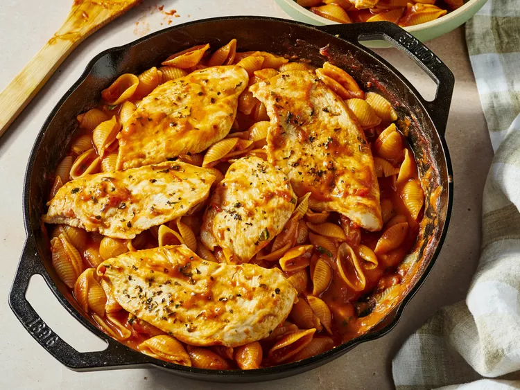

One Pot Chicken Pomodoro

Link to Recipe Website
Description
This one pot chicken pomodoro has a bright fresh flavor and is a fabulous weeknight meal. Pair with a salad to round out dinner.
Ingredients
Chicken
- 1 pound thinly sliced skinless, boneless chicken breasts
- 1 teaspoon salt
- 1 teaspoon garlic granules
- 1 teaspoon Italian seasoning
- 2 tablespoons olive oil, divided
Pomodoro Sauce
- 1 shallot, minced
- 4 cloves garlic, minced
- 1 (28 ounce) can can crushed tomatoes
- 1/2 teaspoon salt
- 1 teaspoon white sugar
- 1/2 teaspoon crushed red pepper flakes
- 1 tablespoon chopped fresh basil
- 1 3/4 cups chicken broth
- 1/4 cup pinot grigio
- 16 ounces conchiglie pasta
Steps
- Gather all ingredients. Heat a deep cast iron skillet over medium heat.
- Season chicken breasts with salt, garlic, and Italian seasoning.
- Pour 2 teaspoons oil into the skillet. Once hot, add chicken. Cook until golden, turning once, about 4 minutes per side. Move chicken to one side of the skillet.
- Pour remaining oil into the skillet. Add minced shallot; cook until softened, about 3 minutes. Add the garlic, stir until fragrant, about 1 minute.
- Add the crushed tomatoes, salt, sugar, red pepper flakes, and basil. Pour in chicken broth and wine. Stir to combine.
- Add pasta to the skillet. Nestle chicken pieces on top of pasta. Reduce heat to medium-low. Cover, and cook until pasta is tender with a bite, about 8 minutes. Taste and adjust seasoning; serve immediately.